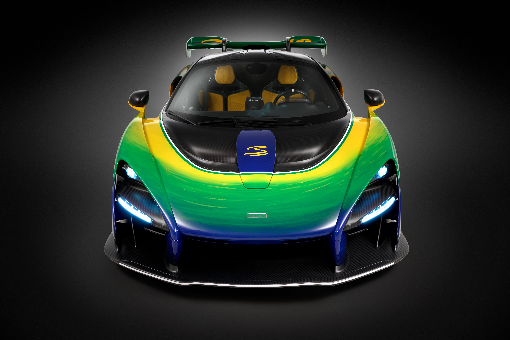

Ídolos da McLaren
A McLaren foi casa de nomes lendários: Ayrton Senna, Alain Prost, Lewis Hamilton, Mika Häkkinen e muitos outros marcaram época com suas vitórias e títulos.
Bruce McLaren, além de fundador, era um piloto excepcional. Sua paixão pelas pistas moldou o DNA da equipe, que sempre uniu coragem e inovação.